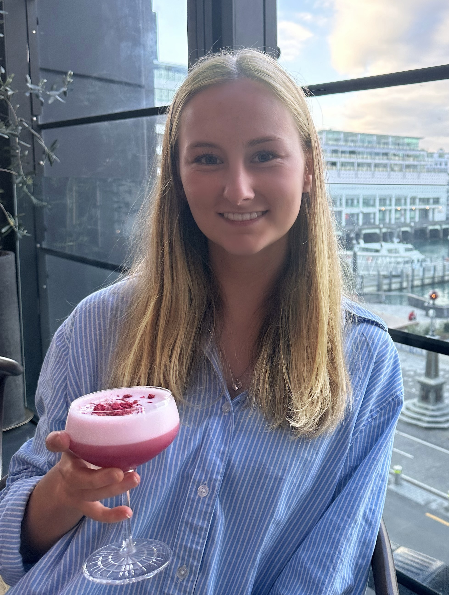

A little bit about me...
I’m currently finishing up my studies in UX/UI Design at Media Design School in Auckland. I first got into design about five years ago, thanks to my high school technologies teacher who helped me realise I enjoy design and that I should actually do something with it!
Since then, I’ve had some awesome opportunities to work with organisations like Auckland Transport and the Lions Club NZ, which really helped me grow as a designer and understand the real-world impact of design.
Outside of design, you’ll usually find me at the beach or out walking, I love being outdoors.
Email
jessmcarthur6@gmail.com
LinkedIn
Jess McArthur